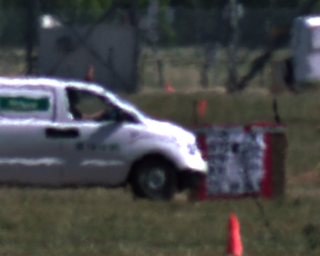

Nantheera Anantrasirichai
￭Removing atmospheric turbulence code (CLEAR: please contact me) for mitigating the effects of atmospheric distortion on observed images.
￭Adaptive-weighted bilateral filter (AWBF) code is an image enhancement algorithm that offers noise reduction with texture preserve for retinal optical coherence tomography (OCT).
￭Denoising code is an algorithm developed based on the observation that the real and imaginary parts of the complex wavelet transform can be accurately modelled using Cauchy distribution.
￭Turbo code is a Turbo coder used in the Wyner-Ziv codec of the Distributed Video Coding (DVC).
￭Sparsity regularization code for reprojective image using self content of the near area to enhance image quality of the far area.
￭Binary UDTCWT code generates robust texture descriptors for blurred images.
￭Atmospheric distorted sequences
Moving car PNG  Van driving in circles at 0.75km
Train in strong heat Two people at 1.5km
Dodge in heat wave People with tools
￭Simulated datasets, generated with gas burner turbulence, with three different amounts of distortions.
￭Terrain Datasets, 3 classes, i.e. hard surfaces (e.g. tarmac, bricks, tiles, deck, rough metal, cement), soft surfaces (e.g. grass, soil, sand, gravels, snow, mud) and unwalkable areas (e.g. static and moving obstructions.
￭Severn Beach sequences, captured eye positions while walking and running.